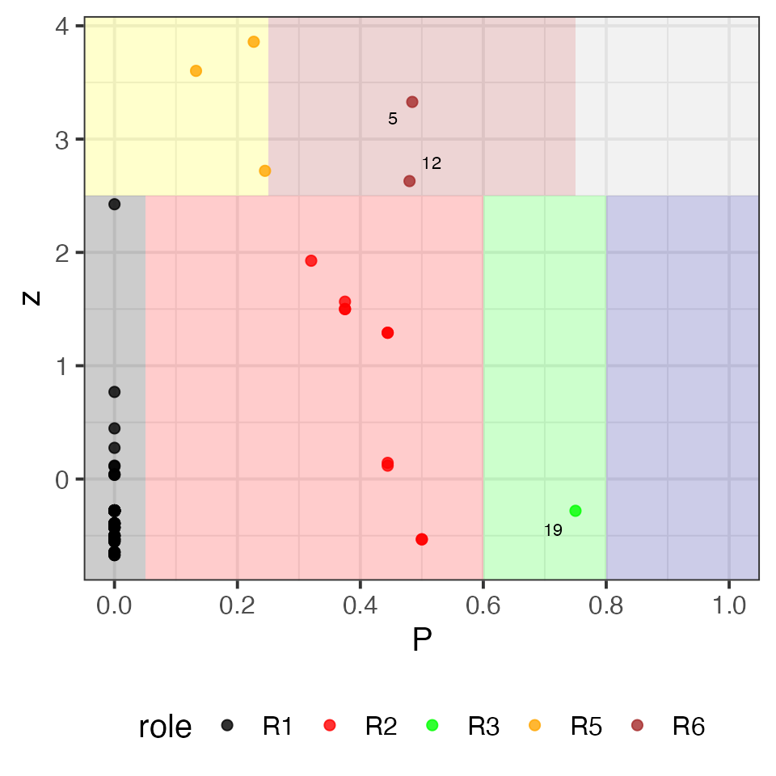
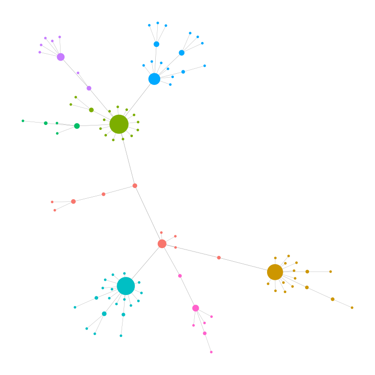

Introduction to netkit
introduction.Rmdnetkit is a lightweight, modular R package designed to simplify the analysis and visualization of complex networks, particularly in biological contexts such as protein–protein interactions, gene co-expression, and signaling networks. However, provided functions and analyses can theoretically be applied to any kind of interaction network. It provides a user-friendly interface to explore network topology, visualize annotated graphs, simulate signal diffusion, and evaluate network robustness.
Key use cases include:
Mapping metadata onto networks
Identifying hubs, bottlenecks, and communities
Simulating information flow within a network
Prioritizing seed nodes for targeted interventions
Visualizing networks with meaningful node/edge annotations
With a special scope to generate high-quality and interpretable figures suitable for publication, most of the functions generate both tabular results and diagnostic plots. The package also offers flexible network visualization options that support node/edge metadata mapping, dynamic sizing, and layout control.
The toolkit is built on igraph, but adds streamlined,
high-level functionality to perform common network analysis tasks with
minimal friction. All diagnostic plots are built on
ggplot2, allowing for flexible customization.
0. Installation
netkit can be installed from github, as follows:
# If not already installed:
install.packages("devtools")
# Install netkit from GitHub
devtools::install_github("agallinat/netkit")1. Annotate Graphs
For this tutorial we will use two different synthetic graphs
generated using igraph::sample_pa() and
igraph::sample_gnp() functions. We also generate two
data.frame objects containing simulated nodes’ and edges’
metadata to be included in the original graph.
suppressMessages(library(igraph))
set.seed(123)
# Generate synthetic graphs
g <- sample_pa(100, power = 1.5, directed = F)
V(g)$name <- as.character(1:vcount(g))
g2 <- sample_gnp(100, 0.02, directed = T)
V(g2)$name <- as.character(1:vcount(g2))
# Simulate nodes and edges metadata
nodes_info <- data.frame(node = V(g)$name,
category = sample(LETTERS, vcount(g), replace = T),
score = rnorm(vcount(g)))
edges <- as_edgelist(g)
edges_info <- data.frame(from = edges[,1], to = edges[,2], edge_score = rnorm(ecount(g)))For instance, this simulated metadata could represent gene expression
results, entity types, edge confidence scores, effect of the
interaction, or any type of information, that may be useful to include
as an igraph object. We can annotate an existing graph,
using the assign_attributes() function. Only matching nodes
and edges are updated. Warnings are issued when there are unmatched
entries.
library(netkit)
# Add metadata to an existing graph
g <- assign_attributes(g, nodes_table = nodes_info, edge_table = edges_info)
vertex_attr_names(g)
#> [1] "name" "category" "score"
edge_attr_names(g)
#> [1] "edge_score"2. Network Visualization
plot_Net() is the main visualization function. It
supports size/color mapping of nodes and edges using existing nodes’
metadata. It also allows layout control.
# In the default plot, nodes' size is mapped to degree and edges' width to betweenness
plot_Net(g)
# Nodes size and edge with scalling factors can be modified at will.
plot_Net(g, edge.width.factor = 0.3, node.size.factor = 2)
# And turned off
plot_Net(g, node.degree.map = F, edge.bw.map = F)
# Node colors can be mapped to existing nodes metadata
plot_Net(g, color = "score", node.degree.map = F)
# For directed graphs, arrow sizes are also easily custimizable
plot_Net(g2, edge.width.factor = 0.5, node.size.factor = 2, edge.arrow.size = 0.3)Specific nodes can also be highlighted using the function
highlight_nodes() and the nodes’ name. Highlighting method
(label, fill and/or outline) and colors can be customized at will.
Aditional arguments are passed to the plot_Net()
function:
highlight_nodes(g, nodes = c("1", "2", "4"), method = c("outline", "fill"),
edge.width.factor = 0.3, node.degree.map = FALSE)Both functions (plot_Net() and
highlight_nodes()) also allow for layout control via
layout parameter. This accepts a coordinates matrix custom
or generated by any of the layout functions available in
igraph package. A special layout option has been
implemented in netkit package to display the network as a
horizontal tree (layout_horizontal_tree()). Which is
particularly useful to show hierarchical relationships.
plot_Net(g, edge.width.factor = 0.3, node.size.factor = 2,
layout = layout_horizontal_tree(g))3.1. Global topology
The core functions for a global network topology analysis are
plot_CCDF(), which generates a plot of the
complementary cumulative degree distribution (CCDF),
and sumarize_graph_metrics(), which calculates the
following parmeters for an input graph:
- Number of nodes and edges
- Directed
TRUE/FALSE - Graph density
- Diameter and average path length of the largest connected component
- Clustering coefficient (transitivity)
- Degree assortativity
- Average degree and betweenness centrality
- Number of connected components and size of the largest connected component
- Number of single nodes
- Algebraic connectivity (second-smallest Laplacian eigenvalue)
- Degree entropy (Shannon entropy of the degree distribution)
- Gini coefficient of node degrees
- Modularity of the community structure (via Louvain algorithm)
The function compare_networks(), accepts two graphs as
input, and computes the same metrics on both, and their associated
(CCDF).
# Global topology analysis
summarize_graph_metrics(g)
#> Nodes Edges Is_directed Density Diameter Average_path_length
#> 1 100 99 FALSE 0.02 10 5.027273
#> Clustering_coefficient Degree_assortativity Avg_degree Avg_betweenness
#> 1 0 -0.4943885 1.98 199.35
#> Components Single_nodes LCC_size LCC_percent Algebraic_connectivity
#> 1 1 0 100 1 0.01500655
#> Degree_entropy Gini_degree Modularity
#> 1 1.504678 0.4341414 0.7809917
# Complementary cumulative degree distribution
# It optionally shows a power law reference distribution of chosen gamma.
plot_CCDF(g, show_PL = TRUE, PL_exponents = c(1.5))
# Same analyses to compare two networks
compare_networks(g, g2)
#> $CCDF_plot#>
#> $global_topology
#> Nodes Edges Is_directed Density Diameter Average_path_length
#> 1 100 99 FALSE 0.0200000 10 5.027273
#> 2 100 183 TRUE 0.0369697 8 3.583333
#> Clustering_coefficient Degree_assortativity Avg_degree Avg_betweenness
#> 1 0.00000000 -0.4943885 1.98 199.35
#> 2 0.03725598 0.1039542 3.66 117.80
#> Components Single_nodes LCC_size LCC_percent Algebraic_connectivity
#> 1 1 0 100 1.00 1.500655e-02
#> 2 4 2 96 0.96 3.560702e-18
#> Degree_entropy Gini_degree Modularity
#> 1 1.504678 0.4341414 0.7809917
#> 2 2.824170 0.2796721 0.4884589
#>
#> $similarity
#> jaccard_similarity node_overlap edge_overlap
#> 1 0.003558719 1 0.003558719
#>
#> $ks_test
#>
#> Asymptotic two-sample Kolmogorov-Smirnov test
#>
#> data: deg1 and deg2
#> D = 0.62, p-value < 2.2e-16
#> alternative hypothesis: two-sided3.2. Robustness Analyisis
The package implements robustness_analysis() for
simulating network robustness under targeted or random node removal,
following the framework of Albert et al.,
2000.
In this context, robustness refers to a network’s ability to maintain its connectivity and functionality when nodes are removed — either randomly (failures) or in a targeted manner (attacks). This distinction is particularly relevant in biological networks, where random failures may represent stochastic damage (e.g., mutations, degradation), while targeted attacks can simulate inhibition of key regulatory nodes or drug targets.
The function accepts the parameter removal_strategy
which defines the order of the nodes to be removed. It can be one of:
"random", "degree",
"betweenness", or the name of a numeric vertex attribute.
Custom attributes are interpreted as priority scores (higher = removed
first). At each step, the function tracks the size of the largest
connected component, allowing visualization of how rapidly the network
fragments under each scenario. This analysis is useful to evaluate
network resilience and identify critical nodes whose disruption may
disproportionately affect system integrity.
If the removal strategy is set to "random" and
n_reps > 1, a summarized data frame (with mean and SD)
is returned as summary.
# Robustness analysis
robustness_analysis(g, removal_strategy = "betweenness")
#> $plot#>
#> $all_results
#> # A tibble: 50 × 6
#> rep removed removed_frac lcc_size efficiency n_components
#> <int> <int> <dbl> <dbl> <dbl> <dbl>
#> 1 1 1 0.0101 54 0.107 17
#> 2 1 2 0.0202 20 0.0587 23
#> 3 1 4 0.0404 18 0.0411 37
#> 4 1 6 0.0606 8 0.0140 58
#> 5 1 8 0.0808 7 0.0130 58
#> 6 1 10 0.101 6 0.0103 62
#> 7 1 12 0.121 4 0.00705 67
#> 8 1 14 0.141 4 0.00492 71
#> 9 1 16 0.162 3 0.00387 72
#> 10 1 18 0.182 3 0.00256 74
#> # ℹ 40 more rows
#>
#> $summary
#> # A tibble: 50 × 6
#> rep removed removed_frac lcc_size efficiency n_components
#> <int> <int> <dbl> <dbl> <dbl> <dbl>
#> 1 1 1 0.0101 54 0.107 17
#> 2 1 2 0.0202 20 0.0587 23
#> 3 1 4 0.0404 18 0.0411 37
#> 4 1 6 0.0606 8 0.0140 58
#> 5 1 8 0.0808 7 0.0130 58
#> 6 1 10 0.101 6 0.0103 62
#> 7 1 12 0.121 4 0.00705 67
#> 8 1 14 0.141 4 0.00492 71
#> 9 1 16 0.162 3 0.00387 72
#> 10 1 18 0.182 3 0.00256 74
#> # ℹ 40 more rows
#>
#> $auc
#> $auc$lcc_size
#> [1] 0.04638982
#>
#> $auc$efficiency
#> [1] 0.03235174
#>
#> $auc$n_components
#> [1] 0.58626813.3. Hubs
Hub nodes are defined as nodes with a particularly
high degree and betweenness centrality. Using the function
find_hubs(), we can identify these nodes using either
z-score or quantile thresholds for degree and betweenness centrality.
The function generates a diagnostic plot to visualize the classification
using a scatter plot with marginal histograms.
# Hubs detection
find_hubs(g, method = "zscore",
degree_threshold = 2.5,
betweenness_threshold = 1,
hub_names = TRUE) # to display hub nodes' label in the diagnostic plot#> $plot
#>
#> $method
#> [1] "Hub nodes identified by method: zscore with Degree metric threshold = 2.5 and Betweenness metric threshold = 1"
#>
#> $result
#> # A tibble: 100 × 6
#> node degree betweenness degree_metric betweenness_metric is_hub
#> <chr> <dbl> <dbl> <dbl> <dbl> <lgl>
#> 1 1 7 0.662 2.42 4.84 FALSE
#> 2 2 3 0.543 0.977 4.08 FALSE
#> 3 3 2 0.287 0.377 2.23 FALSE
#> 4 4 14 0.298 3.73 2.31 TRUE
#> 5 5 17 0.669 4.11 4.88 TRUE
#> 6 6 4 0.0794 1.44 0.424 FALSE
#> 7 7 1 0 -0.469 -0.358 FALSE
#> 8 8 16 0.348 4.00 2.70 TRUE
#> 9 9 2 0.0202 0.377 -0.153 FALSE
#> 10 10 2 0.0202 0.377 -0.153 FALSE
#> # ℹ 90 more rows
#>
#> $graph
#> IGRAPH 5ed3cdb UN-- 100 99 -- Barabasi graph
#> + attr: name (g/c), power (g/n), m (g/n), zero.appeal (g/n), algorithm
#> | (g/c), name (v/c), category (v/c), score (v/n), is_hub (v/l),
#> | edge_score (e/n)
#> + edges from 5ed3cdb (vertex names):
#> [1] 1 --2 1 --3 3 --4 2 --5 5 --6 6 --7 1 --8 4 --9 8 --10 5 --11
#> [11] 5 --12 12--13 5 --14 8 --15 6 --16 2 --17 14--18 4 --19 1 --20 5 --21
#> [21] 20--22 19--23 12--24 12--25 25--26 12--27 14--28 12--29 12--30 5 --31
#> [31] 4 --32 30--33 28--34 17--35 23--36 1 --37 12--38 22--39 5 --40 6 --41
#> [41] 5 --42 4 --43 8 --44 8 --45 8 --46 4 --47 4 --48 5 --49 10--50 5 --51
#> [51] 35--52 1 --53 8 --54 30--55 4 --56 12--57 5 --58 4 --59 28--60 46--61
#> + ... omitted several edgesThe diagnostic plot is generated using ggplot2 with a
ggExtra layer. Additional ggplot2 parameters
or layers should be added before the plot is rendered. For this reason,
the function includes the argument gg_extra = list() which
passes comma-separated ggplot2 parameters and layers to the
plot before rendering, as follows:
# First we need to load `ggplot2` library for
suppressMessages(library(ggplot2))
# Hubs detection plot customization.
# Notice all arguments in `gg_extra` are in list format, separated with commas, not `+` signs (as usual for `ggplot2`)
# To modify the color of the highlighted area in the plot, use the argument `focus_color`.
hubs_result <- find_hubs(g, method = "zscore", degree_threshold = 2.5, betweenness_threshold = 1,
focus_color = "purple",
gg_extra = list(xlim(c(-2, 6)),
ylim(c(-2, 6)),
ggtitle("Hubs detection"),
theme_minimal(),
theme(legend.position = "bottom")))
hubs_result$plot3.4. Bottlenecks
Bottlenecks are defined as nodes with a particularly
high betweenness centrality but low degree. Similarly to the
find_hubs() function, we can use
find_bottlenecks() to identify these nodes. Either z-score
or quantile thresholds can be employed for degree and betweenness
centrality thresholding. The function generates a diagnostic plot to
visualize the classification using a scatter plot with marginal
histograms.
As in find_hubs(), the function includes the argument
gg_extra = list() which passes comma-separated
ggplot2 parameters and layers to the plot before rendering,
to allow full plot customization.
# Bottlenecks detection
find_bottlenecks(g,
method = "zscore") #> $plot
#>
#> $method
#> [1] "Bottlenecks identified by method: zscore with Degree metric threshold = -1 and Betweenness metric threshold = 1"
#>
#> $result
#> # A tibble: 100 × 6
#> node degree betweenness degree_metric betweenness_metric is_bottleneck
#> <chr> <dbl> <dbl> <dbl> <dbl> <lgl>
#> 1 1 7 0.662 2.42 4.84 FALSE
#> 2 2 3 0.543 0.977 4.08 FALSE
#> 3 3 2 0.287 0.377 2.23 FALSE
#> 4 4 14 0.298 3.73 2.31 FALSE
#> 5 5 17 0.669 4.11 4.88 FALSE
#> 6 6 4 0.0794 1.44 0.424 FALSE
#> 7 7 1 0 -0.469 -0.358 FALSE
#> 8 8 16 0.348 4.00 2.70 FALSE
#> 9 9 2 0.0202 0.377 -0.153 FALSE
#> 10 10 2 0.0202 0.377 -0.153 FALSE
#> # ℹ 90 more rows
#>
#> $graph
#> IGRAPH 5ed3cdb UN-- 100 99 -- Barabasi graph
#> + attr: name (g/c), power (g/n), m (g/n), zero.appeal (g/n), algorithm
#> | (g/c), name (v/c), category (v/c), score (v/n), is_bottleneck (v/l),
#> | edge_score (e/n)
#> + edges from 5ed3cdb (vertex names):
#> [1] 1 --2 1 --3 3 --4 2 --5 5 --6 6 --7 1 --8 4 --9 8 --10 5 --11
#> [11] 5 --12 12--13 5 --14 8 --15 6 --16 2 --17 14--18 4 --19 1 --20 5 --21
#> [21] 20--22 19--23 12--24 12--25 25--26 12--27 14--28 12--29 12--30 5 --31
#> [31] 4 --32 30--33 28--34 17--35 23--36 1 --37 12--38 22--39 5 --40 6 --41
#> [41] 5 --42 4 --43 8 --44 8 --45 8 --46 4 --47 4 --48 5 --49 10--50 5 --51
#> [51] 35--52 1 --53 8 --54 30--55 4 --56 12--57 5 --58 4 --59 28--60 46--61
#> + ... omitted several edges3.5. Calculate Roles
Beyond classical hubs and bottlenecks, the package implements the
function calculate_roles() for node role classification
based on within-module and between-module connectivity, as described by
Guimerà &
Amaral, 2005, which defines nodes’ roles using two metrics:
Within-module degree z-score: measures how well-connected a node is to others within its own module (i.e., local hubness).
Participation coefficient: quantifies how evenly a node’s links are distributed across different modules, capturing its inter-modular connectivity.
Combining these dimensions allows the classification of nodes into distinct structural roles — such as module hubs, connectors, or peripheral nodes — providing insight into how individual elements contribute to local and global network organization.
The function generates a classic ggplot2 object, thus,
the resulting plot is fully customizable with ggplot2.
# Hubs detection
calculate_roles(g,
label.size = 15,
label_region = c("R3", "R6")) # to display the label of nodes with roles 'R1' and 'R2' in the plot.
#> $plot
#>
#> $roles_definitions
#> Name Description Condition
#> 1 R1 Ultra-peripheral (non-hub) z < 2.5 & P <= 0.05
#> 2 R2 Peripheral (non-hub) z < 2.5 & 0.05 < P & P <= 0.6
#> 3 R3 Non-hub connector z < 2.5 & 0.6 < P & P <= 0.8
#> 4 R4 Non-hub kinless z < 2.5 & P > 0.8
#> 5 R5 Provincial hub z >= 2.5 & P <= 0.25
#> 6 R6 Connector hub z >= 2.5 & 0.25 < P & P <= 0.75
#> 7 R7 Kinless hub z >= 2.5 & P > 0.75
#>
#> $result
#> # A tibble: 98 × 6
#> node module z p role stringsAsFactors
#> <chr> <int> <dbl> <dbl> <chr> <lgl>
#> 1 1 7 2.72 0.245 R5 FALSE
#> 2 2 7 0.118 0.444 R2 FALSE
#> 3 3 7 -0.532 0.5 R2 FALSE
#> 4 4 1 3.60 0.133 R5 FALSE
#> 5 5 8 3.33 0.484 R6 FALSE
#> 6 6 3 1.57 0.375 R2 FALSE
#> 7 7 3 -0.671 0 R1 FALSE
#> 8 8 4 3.86 0.227 R5 FALSE
#> 9 9 1 0.0431 0 R1 FALSE
#> 10 10 4 0.0375 0 R1 FALSE
#> # ℹ 88 more rows3.6. Modules
The package also implements a function to identify
modules (communities) in a network using a variety of
community detection algorithms from the igraph package
(e.g., Louvain, Walktrap, Infomap). Optionally filters out small
modules, visualizes the detected modules, and returns induced subgraphs
for each module.
Additional parameters are passed through the plot_Net()
function, allowing full customization of the network plot.
# Find modules
find_modules(g,
method = "louvain",
edge.width.factor = 0.3, node.size.factor = 2)
#> $module_table
#> # A tibble: 100 × 2
#> node module
#> <chr> <int>
#> 1 1 1
#> 2 2 1
#> 3 3 1
#> 4 4 2
#> 5 5 3
#> 6 6 4
#> 7 7 4
#> 8 8 5
#> 9 9 2
#> 10 10 5
#> # ℹ 90 more rows
#>
#> $n_modules
#> [1] 8
#>
#> $subgraphs
#> NULL
#>
#> $method
#> [1] "louvain"
#>
#> $graph
#> IGRAPH 5ed3cdb UN-- 100 99 -- Barabasi graph
#> + attr: name (g/c), power (g/n), m (g/n), zero.appeal (g/n), algorithm
#> | (g/c), name (v/c), category (v/c), score (v/n), module (v/n), color
#> | (v/c), label (v/c), edge_score (e/n)
#> + edges from 5ed3cdb (vertex names):
#> [1] 1 --2 1 --3 3 --4 2 --5 5 --6 6 --7 1 --8 4 --9 8 --10 5 --11
#> [11] 5 --12 12--13 5 --14 8 --15 6 --16 2 --17 14--18 4 --19 1 --20 5 --21
#> [21] 20--22 19--23 12--24 12--25 25--26 12--27 14--28 12--29 12--30 5 --31
#> [31] 4 --32 30--33 28--34 17--35 23--36 1 --37 12--38 22--39 5 --40 6 --41
#> [41] 5 --42 4 --43 8 --44 8 --45 8 --46 4 --47 4 --48 5 --49 10--50 5 --51
#> [51] 35--52 1 --53 8 --54 30--55 4 --56 12--57 5 --58 4 --59 28--60 46--61
#> + ... omitted several edges4. Information flow
Understanding how signals propagate across a network is a key step in many systems-level analyses. Information flow analysis allows users to identify nodes that are likely to be influenced by a stimulus or, conversely, nodes that can best influence a desired set of targets. For instance, in biological networks, information flow analysis is key for pathway reconstruction, to associate nodes (genes/proteins) to molecular functions or diseases, and to prioritize candidate drugs for a given target.
4.1. Network Diffusion
The functions network_diffusion() and
network_diffusion_with_pvalues() simulate the spread of
information from a set of seed nodes across the network. Both functions
supports several diffusion models
("laplacian", "heat", "rwr") and computes the propagated
signal to every node in the network.
network_diffusion_with_pvalues() is an extension of
network_diffusion() that assesses the statistical
significance of diffusion scores by comparing them to a null
distribution obtained via permutation testing (random seed sets of the
same size).
These tools are useful for identifying nodes most impacted by a set of sources, such as disease genes, drug targets, or signaling proteins.
# Diffusion analysis
# Select random genes as seed nodes
seed_nodes <- sample(vertex_attr(g, "name"), 5)
network_diffusion(g, seed_nodes = seed_nodes, method = "laplacian")
#> # A tibble: 100 × 2
#> node score
#> <chr> <dbl>
#> 1 44 0.865
#> 2 79 0.865
#> 3 87 0.850
#> 4 25 0.677
#> 5 41 0.647
#> 6 26 0.224
#> 7 86 0.214
#> 8 8 0.0939
#> 9 6 0.0867
#> 10 4 0.0510
#> # ℹ 90 more rows
network_diffusion_with_pvalues(g, seed_nodes = seed_nodes, method = "laplacian")
#> Running 1000 permutations with 5 random seed nodes each (parallelized)...
#> # A tibble: 100 × 4
#> node score p_empirical stringsAsFactors
#> <chr> <dbl> <dbl> <lgl>
#> 1 44 0.865 0.000999 FALSE
#> 2 79 0.865 0.000999 FALSE
#> 3 87 0.850 0.000999 FALSE
#> 4 25 0.677 0.000999 FALSE
#> 5 41 0.647 0.000999 FALSE
#> 6 26 0.224 0.000999 FALSE
#> 7 86 0.214 0.000999 FALSE
#> 8 6 0.0867 0.000999 FALSE
#> 9 12 0.0423 0.000999 FALSE
#> 10 7 0.0225 0.000999 FALSE
#> # ℹ 90 more rows4.2. Reverse Network Diffusion
The function greedy_seed_selection() implements a
greedy algorithm to select a set of seed nodes (of size
k) that maximize the total diffusion signal over a given set of
target nodes.
This reverse diffusion approach can be thought of as solving the inverse problem: Given a set of nodes I want to affect, which upstream nodes (seeds) should I perturb to maximally reach them?
This method is especially relevant in contexts like:
Designing combinatorial interventions to target a disease module.
Optimizing signal propagation to modulate a known gene signature.
Identifying minimal upstream regulators of observed phenotypes.
The function also includes the optional argument
candidate_nodes, a character vector of eligible nodes’
names to be considered as seeds. If NULL (default), all
non-target nodes are used.
By simulating and optimizing diffusion iteratively,
greedy_seed_selection() helps prioritize actionable nodes
in large and complex networks.
Note: Reverse diffusion is a computationally hard problem, as testing all possible combinations of seed nodes is combinatorially explosive -even in small networks-. The function solves this problem with a greedy algorithm, in which the node that most increases the total diffusion signal over the target nodes is added in each iteration (one at a time). This is an heuristic approach that while does not guarantee the absolute best seed set, it performs very well in real-world networks and lapses a reasonable time, making it ideal for exploratory and applied analyses.
# Select random genes as target nodes
target_nodes <- sample(vertex_attr(g, "name"), 5)
greedy_seed_selection(g, target_nodes = target_nodes, k = 20, method = "laplacian")
#> $selected_seeds
#> [1] "61" "99" "35" "6" "4" "5" "52" "16" "17" "41" "8" "2" "32" "43" "47"
#> [16] "48" "56" "59" "64" "87"
#>
#> $final_target_score
#> [1] 0.9790991
#>
#> $scores_at_each_step
#> [1] 0.1719920 0.3439840 0.5033102 0.6487288 0.6996954 0.7497938 0.7956516
#> [8] 0.8333527 0.8639716 0.8867701 0.9057855 0.9148409 0.9228732 0.9309054
#> [15] 0.9389377 0.9469700 0.9550023 0.9630345 0.9710668 0.9790991
#>
#> $plot
The generated plot is also a ggplot2 object, and thus,
fully customizable.
5. Credits and Contributions
netkit has been developed, and is mantained, by Alex
Gallinat, PhD.
Contributions are welcome! If you’d like to report a bug, suggest a feature, or improve documentation, please open an issue or submit a pull request at:
https://github.com/agallinat/netkit/issues
For larger changes, feel free to open a discussion first.